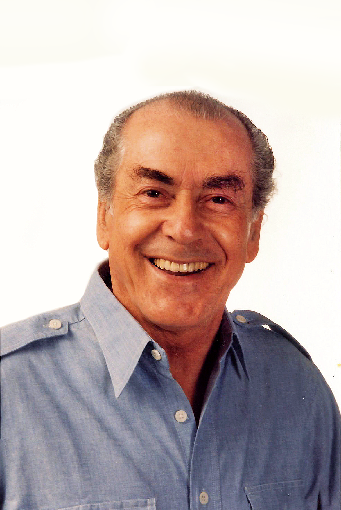

Sobre o Instituto
Bem-vindo ao Instituto Leonel Brizola! O Instituto Leonel Brizola é uma organização sem fins lucrativos criada em 2026 para ampliar, preservar e dar continuidade ao trabalho político de Leonel Brizola, fomentando debates e pesquisas para tornar o Brasil mais próspero.
Conheça nossa história →Quem foi Leonel Brizola?
Leonel de Moura Brizola, nascido em 1922 em Carazinho, no Rio Grande do Sul, foi engenheiro civil e político brasileiro, filiado ao Partido Democrático Trabalhista (PDT), do qual foi fundador e presidente. Considerado um importante líder trabalhista, foi governador do Rio de Janeiro e do Rio Grande do Sul, sendo o único político eleito pelo povo para governar dois estados diferentes na história do Brasil.
Legado: A trajetória de Leonel Brizola permanece como parte importante da história política brasileira.
Entre em contato
Conheça mais sobre o Instituto Leonel Brizola e entre em contato conosco.
Fale conosco →